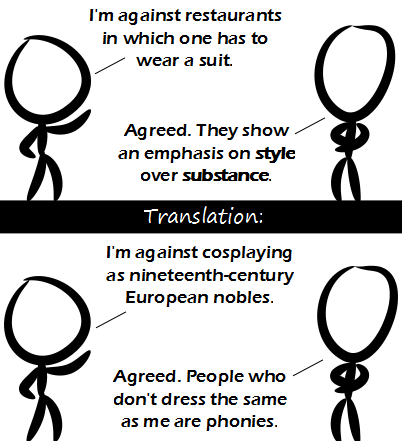

Comic JK 843
When I Feel Like It
⇤
<
?
>
⇥

⇤
<
?
>
⇥
Forum
.
RSS
.
Digg
.
Facebook
.
Reddit
.
Twitter
.
Stumbleupon
Enter your thoughts on number 843 here. Please, no spamming, trolling, phreaking, or cosplaying as your father. I would judge your mother based on her clothes, but I haven't seen her wearing any yet. "That is my cane, that is my fobwatch, those are my *gloves* and that is my *hat*, and THAT, my good man, is my CIGAR!" > A Cigar? How Vulgar! Gentlemen smoke a Pipe! >You mean pocketwatch - fobwatches are for doctors. Most vocally opposed? Probably a high percentage. Myself, I am opposed to judging people by their clothes, primarily because I don't want to have to worry about what I wear. Formal or casual clothes, it really shouldn't matter in my opinion as long as you can move around properly and have decent pockets. That said, I am not aware of any restaurants that force patrons to wear a suit. > It's because you never eat at good restaurants! > Myself, I am opposed to judging people by their clothes, primarily because I am a nudist. >>Good evening sir... could you please leave right now without a fuss? XOR Hey there miss... are you doing anything later? STOP DELETING COMMENTS MORON. TAMPON. STRAPON. COUPON. ^^^ This. The most clever and funny comments are always deleted. I think someone is overly sensitive.